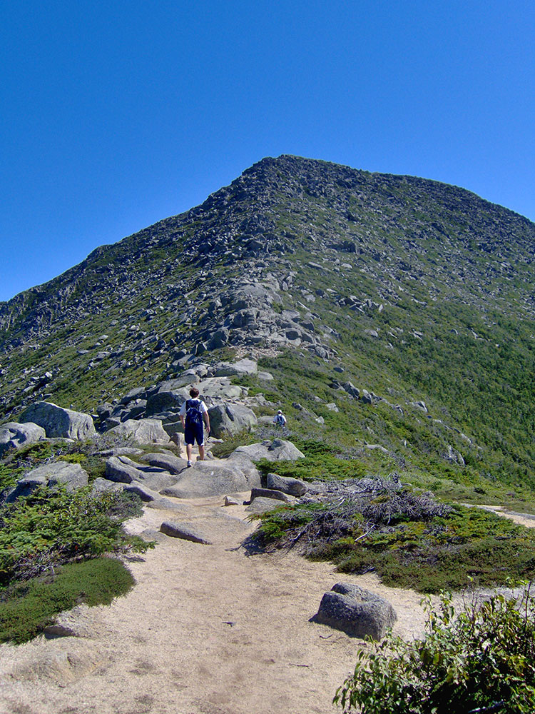
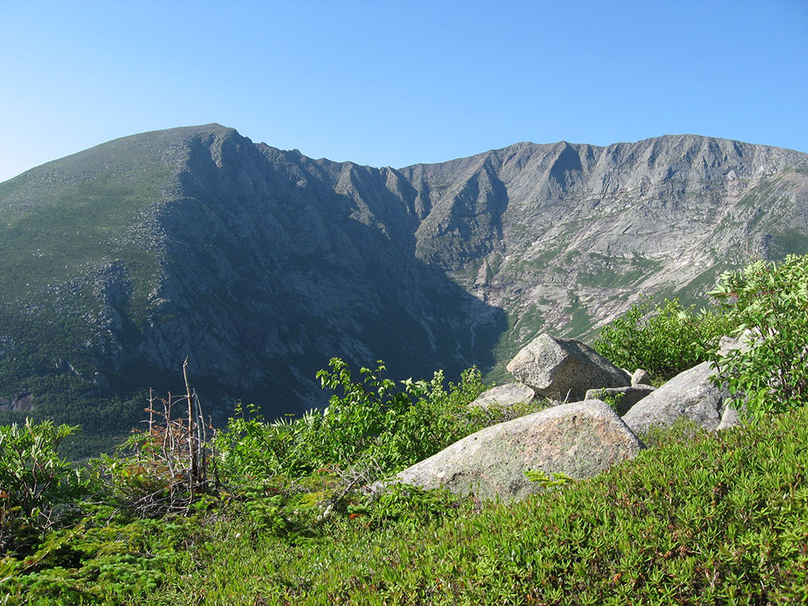
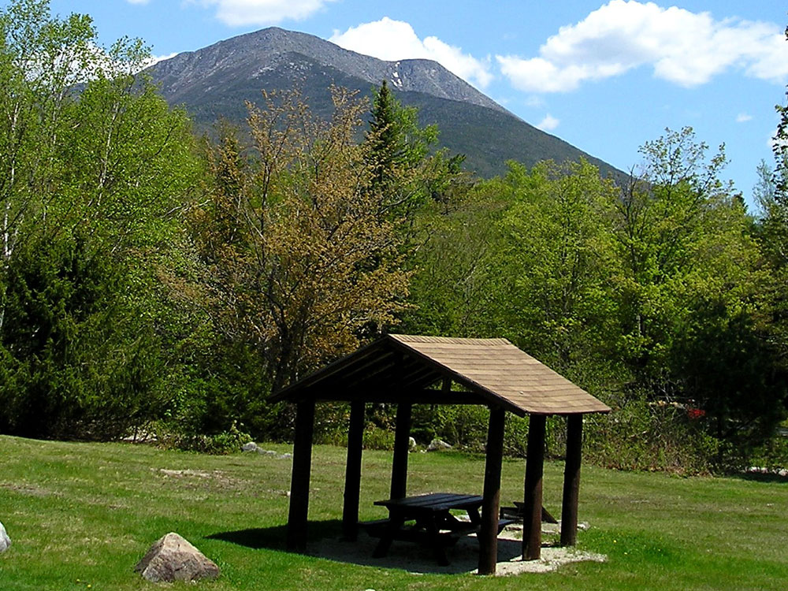
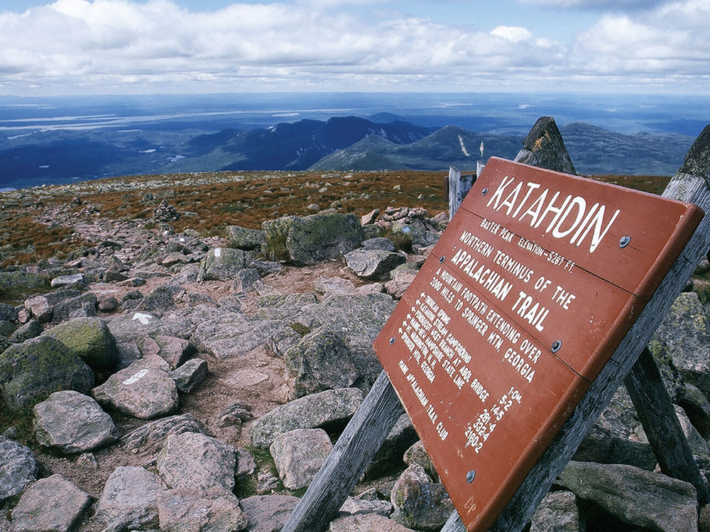

Highest mountain in Maine at 5,269 feet (1,606 m), is the centerpiece of Baxter State Park, and a steep, tall massif formed from a granite intrusion weathered to the surface
General Information
Summer season generally May 15 through October 15
Winter access limited and conditions-dependent
Fees vary by Maine residency and season; day-use parking reservations required during peak periods
How to Get There
From Millinocket (15 mi): Follow Baxter Park Road north from Millinocket to the Togue Pond or Matagamon gatehouses, checking in with park staff before proceeding to designated parking or trailhead areas.
Mount Katahdin is the highest mountain in Maine at 5,269 feet (1,606 m). Named Katahdin, which means "The Greatest Mountain", by the Penobscot Native Americans, it is within Northeast Piscataquis, and is the centerpiece of Baxter State Park. It is a steep, tall massif formed from a granite intrusion weathered to the surface. The flora and fauna on the mountain are typical of those found in northern New England.
Katahdin was known to the Native Americans in the region and was known to Europeans at least since 1689. It has inspired hikes, climbs, journal narratives, paintings, and a piano sonata. The area around the peak was protected by Governor Percival Baxter starting in the 1930s. Katahdin is the northern terminus of the Appalachian Trail and is near a stretch known as the Hundred-Mile Wilderness.
In 1967, Mount Katahdin was designated as a National Natural Landmark by the National Park Service.
The mountain massif itself consists of multiple peaks. Baxter Peak is the tallest, and is the official northern terminus of the Appalachian Trail. South Peak and Pamola Peak are southeast and east of Baxter Peak, respectively, along the Knife Edge ridgeline, while Hamlin Peak lies to the north.
Katahdin is part of a laccolith that formed in the Acadian orogeny when an island arc collided with eastern North America approximately 400 million years ago. On the sides of Katahdin are four glacial cirques carved into the granite by alpine glaciers and in these cirques behind moraines and eskers are several ponds.
In Baxter State Park, many outcrops of sedimentary rocks have striations, whereas Katahdin Granite and Traveler Rhyolite lava have weathered surfaces on which striations are commonly not preserved. Bedrock surfaces of igneous rocks which were buried by glacial sediments and only recently exposed have well preserved striations, as in the vicinity of Ripogenus Dam. Several outcrops of sedimentary rocks along the Patten Road show striations, especially on the north side of the road at Hurricane Deck. A few outcrops near the Pattern Road just north of Horse Mountain are striated, as are several outcrops of sedimentary rocks along the road from Trout Brook Farm northward to Second Lake Matagamon.
Fauna include black bear, deer and moose as well as black flies and mosquitos in the spring. A subspecies of Arctic butterfly, known as the Katahdin Arctic (Oeneis polixenes katahdin) is specific to the area, and is currently listed as endangered. Among the birds are Bicknell's thrush and various songbirds and raptors. The flora includes pine, spruce, fir, hemlock, beech, maple, birch, aspen, and pincushion plant (Diapensia lapponica).
The first recorded climb of "Catahrdin" was by Massachusetts surveyors Zackery Adley and Charles Turner, Jr. in August 1804. In the 1840s Henry David Thoreau climbed Katahdin, which he spelled "Ktaadn"; his ascent is recorded in a well-known chapter of The Maine Woods. A few years later Theodore Winthrop wrote about his visit in Life in the Open Air. Painters Frederic Edwin Church and Marsden Hartley are well-known artists who created landscapes of Katahdin. On 30 November 2011, Christie's auctioned Church's 1860 painting Twilight (Katahdin) for $3.1 million.
In the 1930s Governor Percival Baxter began to acquire land and finally deeded more than 200,000 acres (809 km2) to the State of Maine for a park, named Baxter State Park after him. The summit was officially recognized by the US Board on Geographic Names as "Baxter Peak" in 1931.
As the northern terminus of the Appalachian Trail and southern terminus of the International Appalachian Trail, Katahdin is a popular hiking and backpacking destination and the centerpiece of Baxter State Park. Baxter State Park is open year-round, though strictly regulated in winter. The overnight camping season is from May 15 to October 15 each year. Capacity limits have been placed on day use parking at the trailheads to minimize the overuse of trails.
Mt. Katahdin has several trails leading up to Baxter, Pamola, or Hamlin Peaks. These trails start right up the mountain, but each trail on the mountain ends up taking eight to ten hours round-trip depending on ability. The rest of the trails go up the north side or west side of the mountain. These are accessed from the Chimney Pond Trail. For these trails, hikers must park at the Roaring Brook Campground and hike in. All trails are maintained by the Baxter State Park Authority, which runs the State Park. All of the trails on the mountain are classified as very strenuous, the highest classification the Park Authority gives, except for Saddle (strenuous), Hamlin Ridge trail (moderate), and Chimney Pond (moderate).
Baxter State Park is a large wilderness area permanently preserved as a state park in north-central Maine. It is in the North Maine Woods region and borders the Katahdin Woods and Waters National Monument on the east.
The park was established by 28 donations of land, in trust, from park donor Percival P. Baxter between the years of 1931 and 1962, eventually creating a park of over 200,000 acres (809 km2) in size.
Katahdin consists of a cluster of mountains. The highest peak, Baxter Peak, is named after park donor and former Maine Governor Percival P. Baxter and rises up to 5,267 feet (1,605 m). The mountain is the northern terminus of the Appalachian Trail.
There are many bodies of water in the park. The three largest bodies of water are Grand Lake Matagamon, Webster Lake, and Nesowadnehunk Lake. There are also several smaller ponds, such as Hudson, Draper, Russell, Center and the South Branch ponds. Numerous streams and rivers connect these water bodies, most prominently Trout Brook (between Grand Lake Matagamon and Nesowadnehunk Lake) and Nesowadnehunk Stream (connecting Nesowadnehunk Lake and the small collection of ponds near Sentinel Mountain). Some of these have waterfalls; Nesowadnehunk Stream has Big and Little Niagara Falls, as well as Ledge Falls. Wassataquoik Stream has two waterfalls, Grand and Norway; another popular waterfall is Green Falls, tucked between Bald Mt. and South Pogy Mt. None of this water is potable, and the park advises that visitors bring or treat their water.
Baxter State Park has a diverse population of wildlife, the most common of which are the moose, black bear, and white-tailed deer. These animals are most active during the summer months and can sometimes be seen from the road. The many marshes and bogs of the park serve as habitats for such animals as beavers, muskrats, river otters, and raccoons. There are several active beaver colonies within the park's perimeters. Wooded areas of the park support other types of wildlife, including bobcats, fishers, martens, weasels, chipmunks, red squirrels, snowshoe hares, coyotes, lemmings, and red foxes. There is also an avian population in the park; the most common birds are warblers, thrushes, and flycatchers as well as owls, hawks, eagles, and ducks and other wetland birds.
Overview
Baxter State Park and Mount Katahdin protects Mount Katahdin, the highest mountain in Maine at 5,269 feet. It is the northern terminus of the Appalachian Trail and one of New England's most iconic hiking destinations. Because of its popularity, difficult terrain and fragile alpine environment, Baxter State Park carefully manages access to the mountain through the Katahdin Trailhead Pass (KTP) system. The park covers more than 200,000 acres of wilderness donated by Governor Percival Baxter.
Access
The park's southern entrance is at Togue Pond Gate, about 18 miles from Millinocket and 90 miles north of Bangor. Visitors take I-95 to Medway or Sherman and follow signs. The Park Tote Road is unpaved. Day hikers using the Roaring Brook, Katahdin Stream or Abol trailheads generally need a Katahdin Trailhead Pass for $10 per vehicle, which opens for reservation around April 1 and sells out for summer weekends. Visitors camping in the park the night before do not need a pass. Maine residents enter free, and non-residents pay an entry fee.
Seasons
The main hiking season runs from late May to mid-October, and park day-use hours are generally 6 a.m. to 10 p.m. Summer is the busiest, and passes sell out. Fall brings color and cold, with early snow on the summit. Winter access is limited and for experienced users. Weather on the summit can differ dramatically from the trailhead.
Things to Do
Climb Mount Katahdin
Every route to the summit gains about 4,000 feet and takes 8 to 12 hours round trip.
Cross the Knife Edge
An exposed ridge connects Pamola Peak and Baxter Peak for experienced climbers.
Hike to Chimney Pond
A moderate trail leads to an alpine basin with a campground below the peak.
Look for Moose
The ponds at Sandy Stream and Kidney Pond are good places to see moose.
Camp in the Wilderness
Campgrounds and lean-tos fill early, and reservations are required.
Top Trails
Abol Trail
Length: Approximately 4.4 miles one way
Elevation Gain: Approximately 3,900 feet
Difficulty: Very Strenuous
A steep slide route from the Abol trailhead straight to the tableland.
Hunt Trail (Appalachian Trail)
Length: Approximately 5.2 miles one way
Elevation Gain: Approximately 4,000 feet
Difficulty: Very Strenuous
The classic route from Katahdin Stream to the end of the Appalachian Trail, with hand-over-hand climbing.
Helon Taylor Trail
Length: Approximately 7 miles one way
Elevation Gain: Approximately 4,000 feet
Difficulty: Very Strenuous
A route from Roaring Brook over Pamola Peak, often combined with the Knife Edge.
Knife Edge Traverse
Length: Approximately 1.1 miles one way
Elevation Gain: Included with the summit climb
Difficulty: Extremely Strenuous
A narrow ridge with drop-offs on both sides, only in good weather.
Visitor Centers
The Baxter State Park headquarters in Millinocket has maps, hiking information and reservations. The Togue Pond Gate and the Roaring Brook, Katahdin Stream and Chimney Pond ranger stations have rangers and trail updates. The park reservation system is used for parking and camping, and an account is required.
Camping and Lodging
The park has campgrounds at Roaring Brook, Katahdin Stream, Abol, Nesowadnehunk, Kidney Pond and Daicey Pond, plus lean-tos and cabins, reserved through the Baxter State Park reservation system. Hotels, motels and lodges are in Millinocket, Medway and Patten, and Bangor offers more. Private campgrounds are near the Togue Pond gate.
This article uses material from the Wikipedia articles and official tourism pages for Baxter State Park and Mount Katahdin, which are released under the Creative Commons Attribution-Share-Alike License 3.0. Additional information from Baxter State Park, Baxter State Park Reservations.
Featured Trail

Hunt Trail
10.6 miles round-trip, 4,209 feet
Easiest of the summit trails with wider views and is part of the Appalachian Trail. Starts at Katahdin Stream Campground
Abol Trail
7.3 miles round-trip, 3,950 feet
More challenging, steeper trail to the summit. Starts at Abol Campground



.jpg){kind=link}


